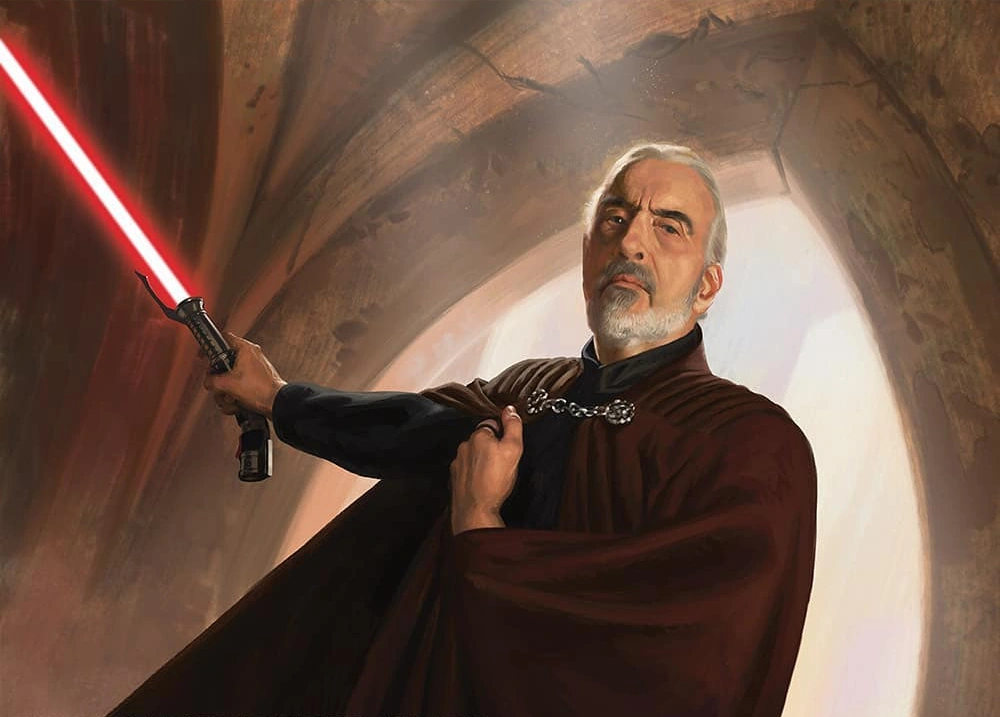

"Аколіт" мертвий: серіал за мотивами всесвіту Зоряних Воєн не планує продовження - Variety

Lucasfilm вирішив не продовжувати серіал від Disney+ після його першого сезону, який зображував появу ситхів приблизно за 100 років до подій «Прихованої загрози».
Ця новина відразу стала шоком, враховуючи те, що більшість фіналу сезону 1 закінчилася безвихідно та викликала кілька сюжетних ліній для сезону 2, і не дуже сюрприз, враховуючи шалено протилежне сприйняття фанатами та менш ніж... значну кількість глядачів, яка впала після прем’єри серіалу в червні.
ГОЛОВНА

Рандомний факт
Ситхське ім'я графа Дуку - Дарт Тиранус. Хоча у фільмах він ніколи не згадувався під цим ім'ям, його він здобув після того, як перейшов на темну сторону сили під впливом Дарта Сідіуса, та, в більшості, своїх ідеалів.
Попри те, що він колись був джедаєм та навіть мав падавана на ім'я Квай-Гон Джин, який, власне, був вперше екранізований у "Прихованій загрозі", вивчаючи глибше його історію поступово розумієш чому він так поступив. Частково це можна зрозуміти з недавно екранізованого анімаційного серіалу "Історії джедаїв", де він, ще будучи джедаєм, приймав складні психологічні рішення, що в результаті й привели його до того, до чого він йшов - темної сторони.
ТУТ МОЖЕ БУТИ ВАША РЕКЛАМА
Цей сайт був створений для тих, хто цікавиться франшизою Зоряних Воєн Джорджа Лукаса та хоче дізнатися більше про їх світ.
Наразі вам доступні до прочитання статті про найпопулярніші планети у світі ЗВ, а також карта Галактики